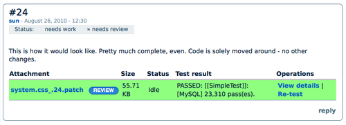
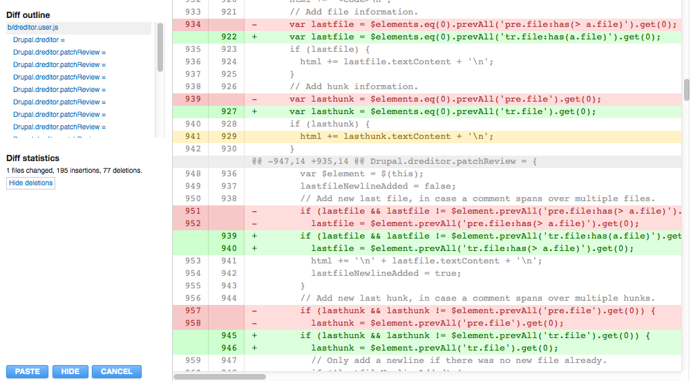
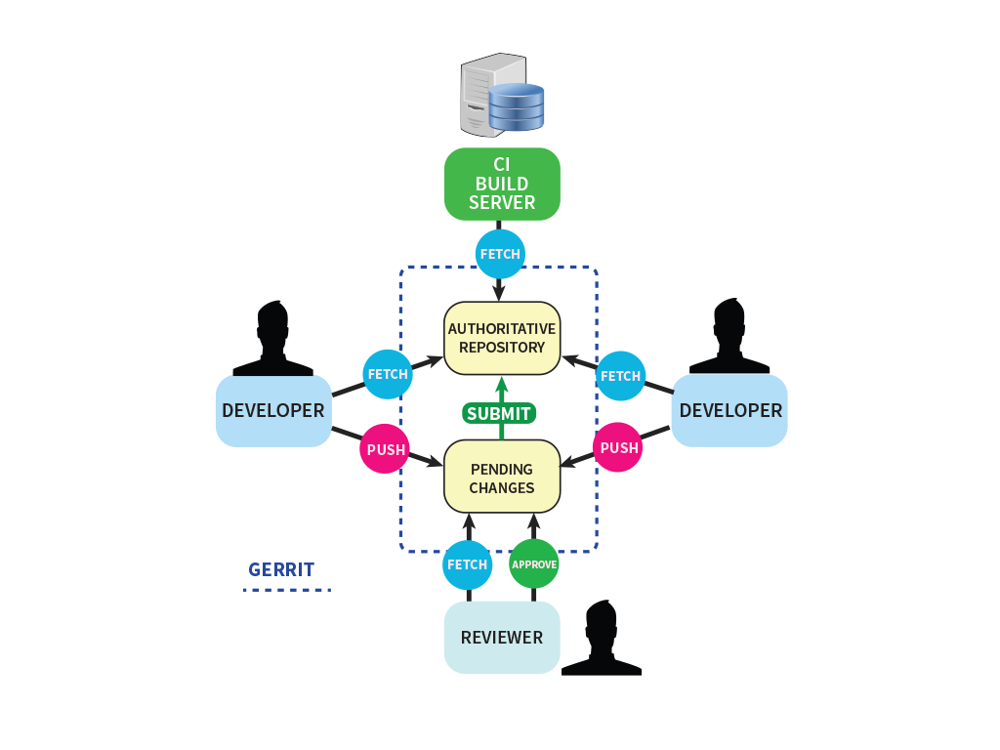
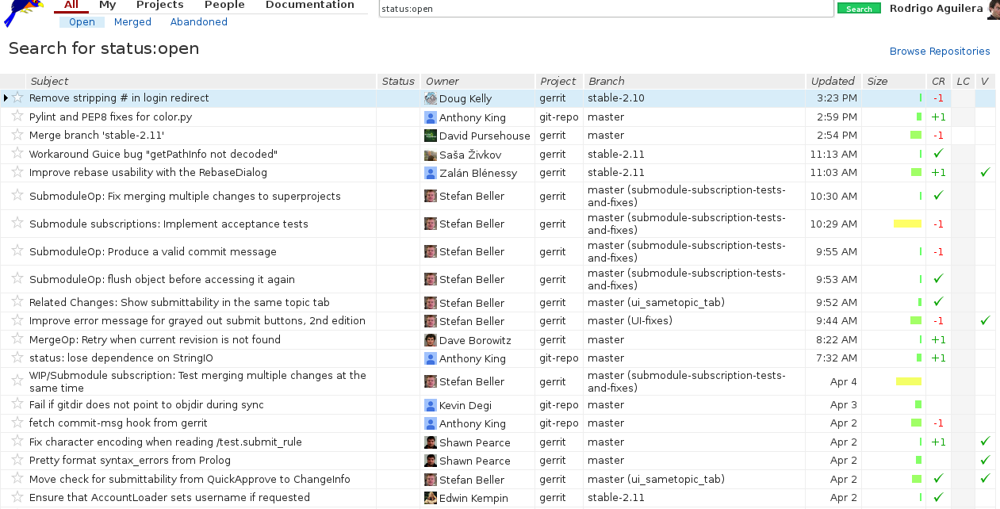
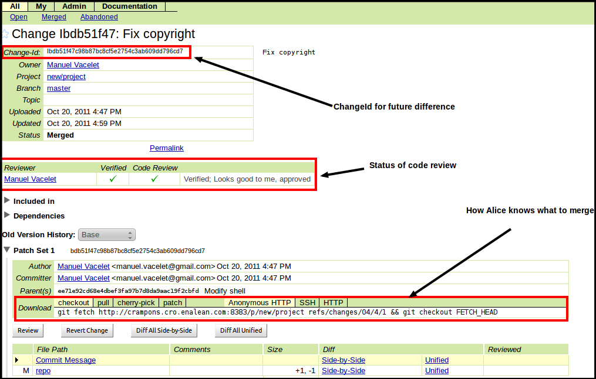
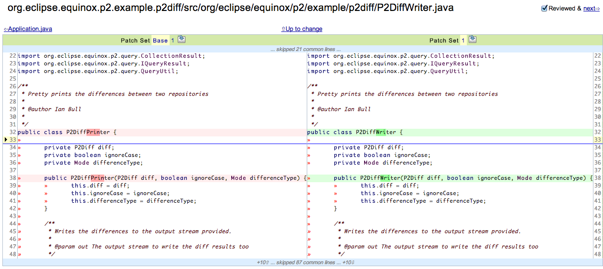
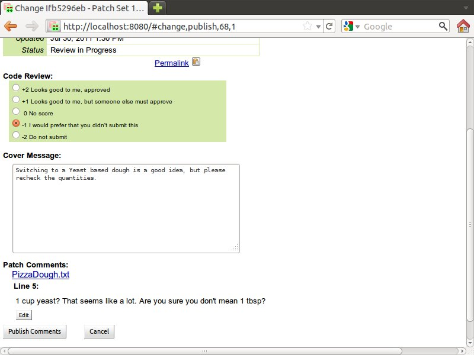
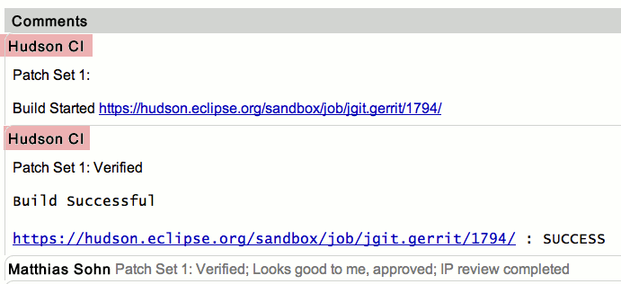

Perform code review inside your development team
Rodrigo Aguilera - @marinero
Who am I?
Rodrigo Aguilera
dgo.to/@rodrigoaguilera
Drupal developer at Ymbra
rodrigo.aguilera@ymbra.com
Acknowledgements
Pedro Cambra
Ymbra
Why?
- Reduces defects
- Spreads code ownership
- Mentors new developers
- Changed my life as a developer
"But nobody does code review..."
- Too busy to review
- Code reviews can get nasty
- Introduces a block
- I don't want to leave the IDE
- A cost effective solution
- Is all about code quality
What am I talking about?
Systematic review of code by your peer developer.
Code review as a firewall.
Be prepared
- Try to make everything code
- Review everything: configuration, file names, variable naming...
- If it can be diffed it can be reviewed
- The review should ignore all those files not relevant like images, binaries or intermediate code(e.g. sass)
A change in the culture
- The code is going to be read
- Make code activity visible
- Make code shareable with links
- Make code digestible (encourage small changes)
- Support conversations about code
A change in the culture (continued)
- The best time to talk about parts of the application you don't like
- Code ownership
- Be proud about your team not your code
- Transmission of code and solutions automagically
- You have a proccess in place when you are not sure about changes
- Multi functional teams
New developers
- They will gain experience faster
- Is much more safer for them to commit code
- Developers are eager to fix the feedback and reach an agreement
How to get started
- Go slow
- Just the diffs
- Review just the scary smelly parts
- On demand
Pre/Post commit review
Pre commit is the most interesting and what most of tools do.
Post commit is also known as code audit or inspection.
Code Review by machines
Integration with static analysis tools
- Coding standards
- Unit tests
- Automated builds with continous integration
- PMD Mess detector, Duplicate code
Code review by humans
- Requirements
- Architecture
- Futureproof code
- Coding idioms
- Potential reuse
- Domain knowledge
Pair programming
Another form of code review
- Real time
- Very effective and great for mentoring
- Requires two developers in the same location
- Less value for the rest of the team
If you don't do code review
- Code ends up being very "personal"
- No full picture of the project
- Code that has never been looked at
- Useless blaming or no one is responsible for the code
- Monster code
- Bad code might remain in this condition forever
- No code reuse
- Members of the team find it hard to improve skills in the code writing craft
Tool assisted code review
- Manages workflow and notifications
- Records of discussion
- Asyncronous
- Some are very opinionated
- Minimum requirements: diffs, inline comments and states
- Extras: roles, auto merge, commit, rebase, notifications, integration with other tools, etc.
Tools
- Good ol' patches (Drupal.org)
- Pull requests (merge requests in gitlab)
- Gerrit
- Redmine
Drupal.org patches

Big free software projects (vim and the linux kernel) use it.
Drupal.org patches - Dreditor to the rescue
Helps us comment on the patches

Also adds a link to simplytest.me
Github pull requests (merge request on gitlab)
- Merge the code from one branch to another
- Can span many commits
- Some developers prefer this way over d.o
Gerrit
Web based git review system written in java

Gerrit
Big projects using it
- Android
- Cyanogenmod
- Wikimedia
- Openstack
- ChromeOS
- And many other google projects
- Gerrit itself
Gerrit - Intro

Gerrit list of changes

Gerrit - a changeset

Gerrit diff

Gerrit approval

A commit can not be merged with at least one -2 and should have at least one +2
Gerrit automatic votes

Gerrit - developer side tools
git-review
gertty
Gerrit drawbacks
- Interface
- Has a learning curve
- Requires to define a review process
- No audit (Post commit)
Redmine code review
- Implemented as a plugin
- Post-commit
- Creates review request over a commit on demand
- Or you can inspect the repo creating comments that are issues to be solved
Ego free reviews
- No finger-pointing
- No point scoring. It's all about doing things right.
- Don't be pedantic
- Find problems, not solutions
- Embrace feedback
Is not that difficult
Your code review